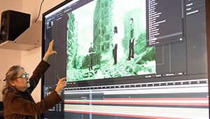

Programs in Manhattan

Borough of Manhattan Community College
Multimedia Programming and design
A.S.
Manhattan
The Multimedia Programming and Design Program prepares students for careers in a variety of multimedia industries, companies and institutions that develop, produce or market multimedia products, programs or services.

Borough of Manhattan Community College
Animation and Motion Graphics
A.S.
Manhattan
The Animation and Motion Graphics program provides students with the fundamentals of two- and three-dimensional (2D and 3D) animation, motion graphics, and special effects for advertising campaigns, video games, movies, and television.

Baruch College
Graphic Communication
B.A.
Manhattan
The graphic communication specialization provides training in graphics as well as basic training in the broader aspects of business communication. It prepares the graphic artist to enter a business environment.